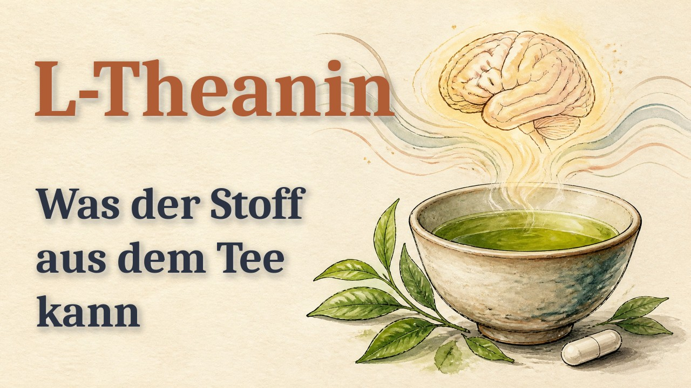

<title>L-Theanin · Erklärvideo (Aquarell) · Vorschau</title>
<meta name="claude:viewport-fit-sides" content="cover">
<style>
  /* Eine Spalte, je Fassung eine Karte mit Player; die neueste oben. */
  :root { --grund: #f4f1ec; --karte: #ffffff; --tinte: #1f2430; --grau: #646b75; --linie: #ddd6cc; --akzent: #324e7a;
    --akzent-text: #ffffff; --gut: #2f7d50; --pruefen: #a35a12; --pruefen-grund: #fbebd9; }
  @media (prefers-color-scheme: dark) { :root:not([data-theme="light"]) { --grund: #15181d; --karte: #1e232a; --tinte: #e8eaee;
    --grau: #9aa3ad; --linie: #2f3640; --akzent: #8fb0e3; --akzent-text: #10151c; --gut: #6fcf97; --pruefen: #f0b067;
    --pruefen-grund: #3a2a17; color-scheme: dark } }
  :root[data-theme="dark"] { --grund: #15181d; --karte: #1e232a; --tinte: #e8eaee; --grau: #9aa3ad; --linie: #2f3640;
    --akzent: #8fb0e3; --akzent-text: #10151c; --gut: #6fcf97; --pruefen: #f0b067; --pruefen-grund: #3a2a17; color-scheme: dark }
  * { box-sizing: border-box; }
  body { background: var(--grund); color: var(--tinte); font: 16px/1.5 system-ui, -apple-system, "Segoe UI", sans-serif; }
  main { max-width: 760px; margin: 0 auto; display: grid; gap: 18px; padding-block: 24px 48px;
    padding-left: max(16px, env(safe-area-inset-left, 0px)); padding-right: max(16px, env(safe-area-inset-right, 0px)); }
  h1 { margin: 0; font: 700 clamp(24px, 6vw, 34px)/1.15 Georgia, "Times New Roman", serif; text-wrap: balance; }
  .aufgabe { margin: 0; padding: 12px 14px; border-left: 4px solid var(--pruefen); background: var(--pruefen-grund); border-radius: 6px; }
  .video { display: grid; gap: 8px; padding: 14px; background: var(--karte); border: 1px solid var(--linie); border-radius: 14px; }
  .kopfzeile { display: flex; flex-wrap: wrap; align-items: baseline; gap: 6px 10px; }
  .video h2 { margin: 0; font: 650 19px/1.3 system-ui, sans-serif; }
  .marke { font: 600 12px/1 system-ui, sans-serif; letter-spacing: .05em; text-transform: uppercase; padding: 4px 8px; border-radius: 6px; }
  .marke.pruefen { background: var(--pruefen-grund); color: var(--pruefen); }
  .marke.info { background: var(--linie); color: var(--grau); }
  .stand, .notiz { margin: 0; font-size: 14px; color: var(--grau); }
  video { width: 100%; max-width: 100%; aspect-ratio: 16 / 9; background: #000; border-radius: 10px; }
  .urteil { display: flex; gap: 8px; }
  .urteil button, .senden { border: 1px solid var(--linie); background: none; color: var(--tinte); border-radius: 999px; padding: 9px 16px;
    font: 600 15px/1 system-ui, sans-serif; cursor: pointer; }
  .urteil button[aria-pressed="true"][data-u="passt"] { background: var(--gut); border-color: var(--gut); color: var(--karte); }
  .urteil button[aria-pressed="true"][data-u="aendern"] { background: var(--pruefen); border-color: var(--pruefen); color: var(--karte); }
  .senden { background: var(--akzent); border-color: var(--akzent); color: var(--akzent-text); border-radius: 10px; }
  textarea { width: 100%; font: 16px/1.4 system-ui, sans-serif; color: var(--tinte); background: var(--grund); border: 1px solid var(--linie);
    border-radius: 8px; padding: 8px 10px; resize: vertical; }
  .zeile { display: flex; flex-wrap: wrap; gap: 10px; align-items: center; }
  .melde { font-size: 14px; color: var(--gut); }
  button:focus-visible, textarea:focus-visible { outline: 3px solid var(--akzent); outline-offset: 2px; }
</style>
<main>
  <h1>L-Theanin · Erklärvideo (Aquarell) · Vorschau</h1>
  <p class="aufgabe"><b>Deine Aufgabe:</b> Fertig: Endfassung vom Nutzer am 11.11. freigegeben. Vorschaubild und Beschreibung unten. Ton kommt beim Antippen von ▶; nichts wird heruntergeladen.</p>
  <article class="video" id="v1" data-id="v_a27bdee94e" data-titel="G  Aquarell und Tusche · erste Fassung">
      <div class="kopfzeile"><h2>G  Aquarell und Tusche · erste Fassung</h2><span class="marke info">zur Info</span></div>
      <p class="stand">Stand 11.11., 19:40 · 15.7 MB</p>
      <video controls playsinline preload="metadata" poster="videos/v_a27bdee94e.jpg" src="videos/v_a27bdee94e.mp4"></video>
      <p class="notiz">Endfassung. 6:44, 903 Wörter, 62 Bilder. Aussprache nach deiner Wahl (Fassungen 1 und 6).</p>
      
    </article>
</main><section style="margin:24px auto;max-width:900px;padding:0 16px">
<h2 style="font:700 22px Georgia,serif">YouTube: Vorschaubild und Beschreibung</h2>

<p><button type="button" id="kopier" style="font:inherit;font-weight:600;padding:12px 16px;border-radius:10px;min-height:48px">Beschreibung kopieren</button> <span id="kopiert"></span></p>
<textarea id="beschr" rows="18" readonly style="width:100%;font:15px/1.4 system-ui,sans-serif;padding:10px;border-radius:10px">L-Theanin: Was der Stoff aus dem Tee kann
Ein Erklärvideo über L-Theanin: wie es im grünen Tee entdeckt wurde, wie es wirken soll, was Studien zeigen, was Behörden sagen und was bei der Selbstanwendung kritisch ist.

Kapitel
0:00 Einleitung
0:24 Entdeckt im Tee
1:07 Vom Blatt zur Kapsel
1:46 Wie es wirken soll
2:35 Stress, Schlaf und Angst
3:29 Konzentration, Koffein und mehr
4:26 Was Behörden sagen
5:13 Selbstanwendung: was kritisch ist
6:11 Fazit

Quellen (Nummern wie im Video)
[1] Sakato 1950: https://doi.org/10.1271/nogeikagaku1924.23.262
[2] Ashihara 2015: https://doi.org/10.1177/1934578X1501000525
[3] Casimir 1960: https://doi.org/10.1016/0006-3002(60)90199-2
[4] Kaneko 2006: https://doi.org/10.1021/jf0525232
[5] Keenan 2011: https://doi.org/10.1016/j.foodchem.2010.08.071
[6] Boros 2016: https://doi.org/10.4103/0973-1296.176061
[7] Mu 2015: https://doi.org/10.1016/j.biotechadv.2015.04.004
[8] FDA 2007: https://www.hfpappexternal.fda.gov/scripts/fdcc/index.cfm?set=GRASNotices&amp;id=209
[9] Scheid 2012: https://doi.org/10.3945/jn.112.166371
[10] Yokogoshi 1998: https://doi.org/10.1023/a:1022490806093
[11] Kakuda 2002: https://doi.org/10.1271/bbb.66.2683
[12] Kobayashi 1998: https://doi.org/10.1271/nogeikagaku1924.72.153
[13] Gomez-Ramirez 2009: https://doi.org/10.1007/s10548-008-0068-z
[14] White 2016: https://doi.org/10.3390/nu8010053
[15] Gerolymos 2026: https://doi.org/10.1038/s41380-026-03727-9
[16] Hidese 2019: https://doi.org/10.3390/nu11102362
[17] Moulin 2024: https://doi.org/10.1007/s40120-024-00624-7
[18] Bulman 2025: https://doi.org/10.1016/j.smrv.2025.102076
[19] Sarris 2019: https://doi.org/10.1016/j.jpsychires.2018.12.014
[20] Camfield 2014: https://doi.org/10.1111/nure.12120
[21] Payne 2025: https://doi.org/10.1093/nutrit/nuaf054
[22] Rogers 2008: https://doi.org/10.1007/s00213-007-0938-1
[23] Kahathuduwa 2020: https://doi.org/10.1038/s41598-020-70037-7
[24] Shamabadi 2023: https://doi.org/10.1016/j.jad.2023.04.029
[25] Shojaei-Zarghani 2021: https://doi.org/10.1002/ptr.7110
[26] Baba 2021: https://doi.org/10.1089/jmf.2020.4803
[27] EFSA 2011: https://doi.org/10.2903/j.efsa.2011.2238
[28] BfR 2003: https://www.bfr.bund.de/cm/343/getraenke_mit_isoliertem_l_theanin.pdf
[29] Health Canada 2026: https://webprod.hc-sc.gc.ca/nhpid-bdipsn/atReq?atid=l.theanine2&amp;lang=eng
[30] Yu 2016: https://doi.org/10.3109/01480545.2015.1080264
[31] MSK 2026: https://www.mskcc.org/cancer-care/integrative-medicine/herbs/l-theanine
[32] LactMed 2025: https://www.ncbi.nlm.nih.gov/books/NBK501922/
[33] Desai 2004: https://doi.org/10.1002/rcm.1319

Sprecherstimme synthetisch (ElevenLabs). Bilder KI-generiert. Das Video ersetzt nicht das Gespräch mit Arzt oder Ärztin.

#LTheanin #GrünerTee #Erklärvideo #Nahrungsergänzung #Wissenschaft
</textarea>
<script>
(function () {
  var TITEL = "L-Theanin · Erklärvideo (Aquarell)", db = null, kom = null, anClaude = false, urteil = {};
  document.querySelectorAll("video").forEach(function (v) { v.addEventListener("play", function () {
    document.querySelectorAll("video").forEach(function (w) { if (w !== v) w.pause(); }); v.muted = false; }); });
  document.querySelectorAll(".video").forEach(function (k) {
    var id = k.dataset.id, ta = k.querySelector("textarea"), melde = k.querySelector(".melde");
    k.querySelectorAll(".urteil button").forEach(function (b) { b.addEventListener("click", function () {
      urteil[id] = b.dataset.u; k.querySelectorAll(".urteil button").forEach(function (x) { x.setAttribute("aria-pressed", String(x === b)); });
      if (b.dataset.u === "aendern" && ta) ta.focus();
      if (db) db.collection("vorschau_urteile").doc(id).set({ video: k.dataset.titel, urteil: b.dataset.u, notiz: ta ? ta.value.trim() : "", zeit: new Date().toISOString() }).catch(function () {});
    }); });
    var s = k.querySelector(".senden"); if (!s) return;
    s.addEventListener("click", function () {
      var text = "Vorschau " + TITEL + ": " + k.dataset.titel + " – " + ({ passt: "PASST", aendern: "ÄNDERN" }[urteil[id]] || "ohne Urteil") + (ta.value.trim() ? "\nNotiz: " + ta.value.trim() : "");
      if (db) db.collection("vorschau_urteile").doc(id).set({ video: k.dataset.titel, urteil: urteil[id] || null, notiz: ta.value.trim(), zeit: new Date().toISOString() }).catch(function () {});
      if (!kom || !anClaude) { melde.textContent = db ? "Gespeichert. Claude liest es beim nächsten Mal." : "Bitte Claude im Chat Bescheid geben."; return; }
      s.disabled = true;
      kom.anchorFor(k).then(function (a) { return kom.sendToClaude({ anchor: a, text: text.slice(0, 3900) }); })
        .then(function () { melde.textContent = "An Claude geschickt ✓"; }, function (e) { melde.textContent = e && e.code === "consent_required" ? "Gespeichert. Zum Senden bitte die Freigabe erlauben." : "Gespeichert, Senden fehlgeschlagen."; })
        .then(function () { s.disabled = false; });
    });
  });
  if (window.claude && claude.use) {
    claude.use("db").then(function (d) { if (d) db = d; }).catch(function () {});
    claude.use("comments").then(function (c) { if (!c || !c.canSendToClaude) return; kom = c;
      c.canSendToClaude().then(function (v) { anClaude = v === "available"; }, function () {}); }).catch(function () {});
  }
})();
</script>

<script>document.getElementById("kopier").addEventListener("click",function(){navigator.clipboard.writeText(document.getElementById("beschr").value).then(function(){document.getElementById("kopiert").textContent="Kopiert.";},function(){document.getElementById("kopiert").textContent="Kopieren ging nicht, bitte im Feld markieren.";});});</script>
